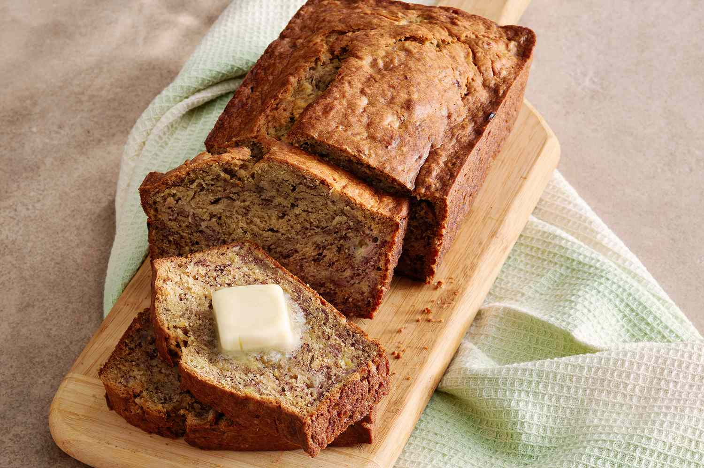

Banana Bread

This banana bread will absolutely knock your socks off. With it's simple banana-y goodness and just a touch of sweetness, this tasty treat will make your family (and the cat) want more!
This recipe is simple to make, and won't take long at all. All you need is a little bit of patience and just a touch of elbow grease.
Ingredients
- 2 to 3 medium very ripe bananas, peeled
- 1/3 cup butter, melted
- 1/2 teaspoon baking soda
- 1 pinch salt
- 3/4 cup sugar
- 1 large egg, beaten
- 1 teaspoon vanilla extract
- 1 1/2 cups all-purpose flour
Steps
- Preheat the oven to 350 degrees F, and butter an 8 x 4-inch loaf pan.
- In a mixing bowl, mash the ripe bananas with a fork until smooth. Pour and stir in the melted butter.
- Mix in the baking soda, salt, sugar, beaten egg, and vanilla extract. Stir in the flour.
- Pour the batter into your buttered pan.
- Bake for 55 to 65 minutes at 350 degrees F, or until a toothpick comes out clean from the center.
- Let cool completely and serve!